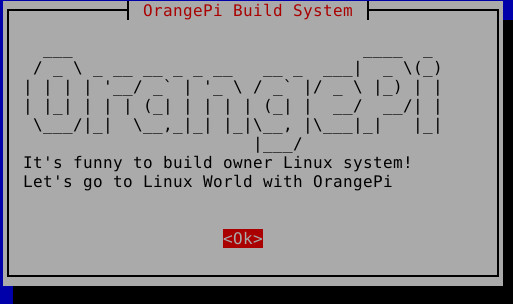
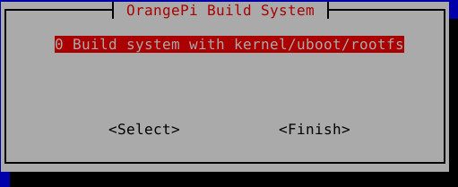
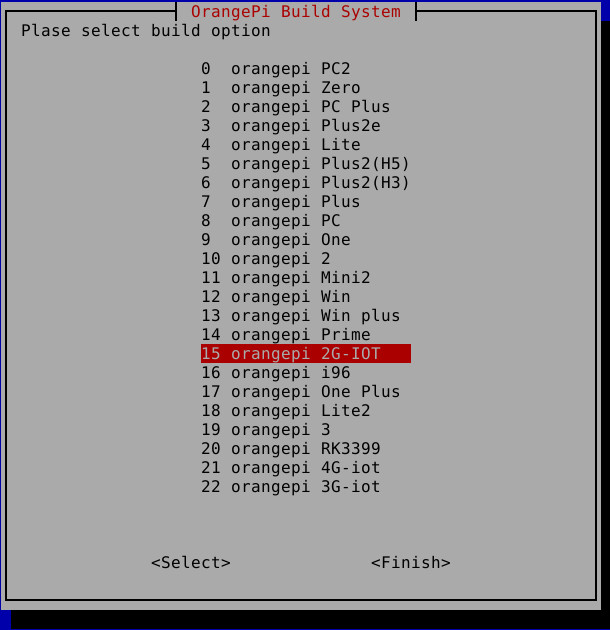
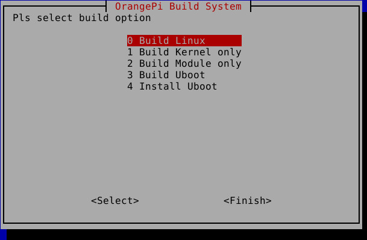

參考資訊：
https://github.com/orangepi-xunlong/OrangePi_Build
步驟如下：
$ cd $ git clone https://github.com/orangepi-xunlong/OrangePi_Build $ cd OrangePi_Build $ ./Build_OrangePi.sh



$ cd ../OrangePiRDA $ ./build.sh
